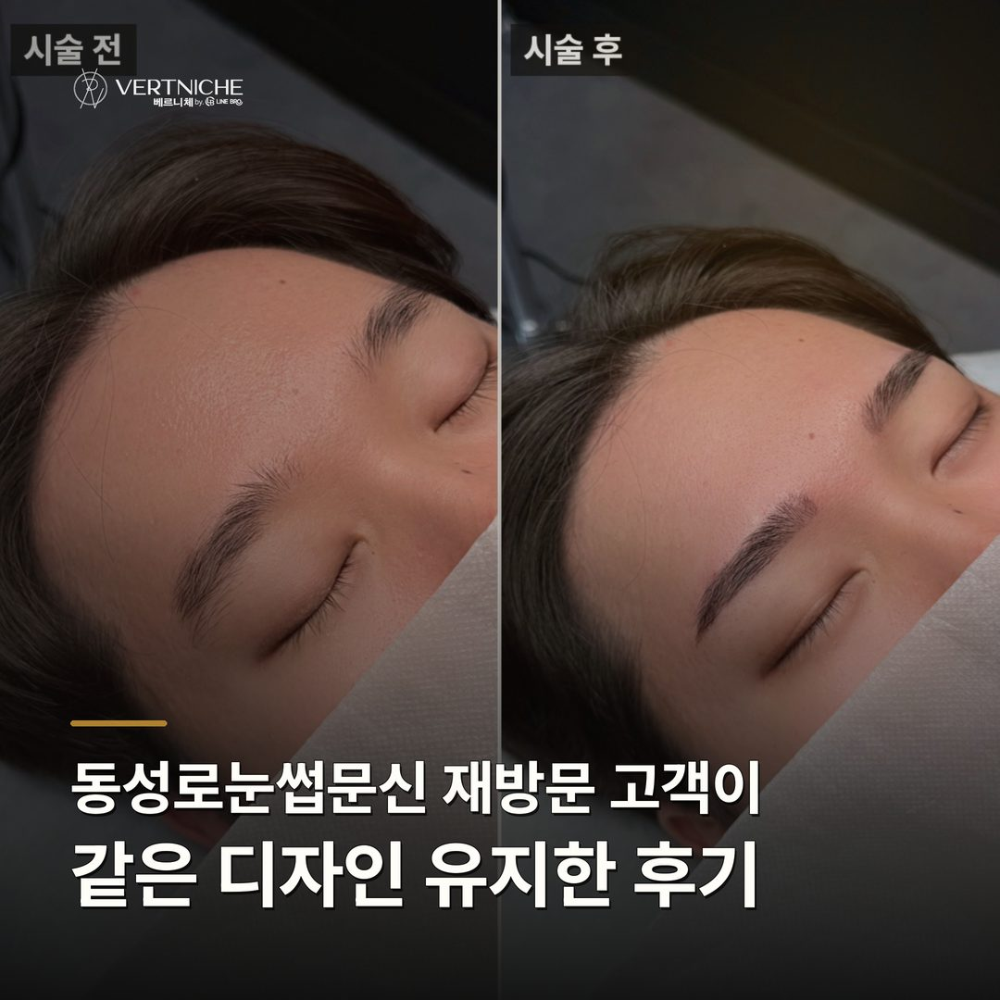
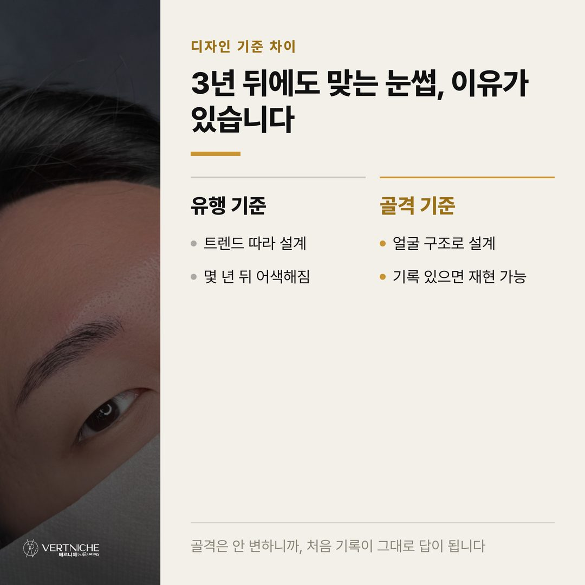
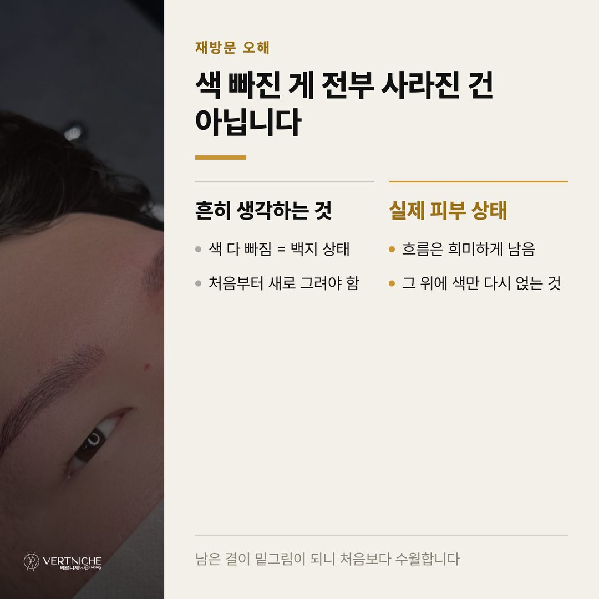
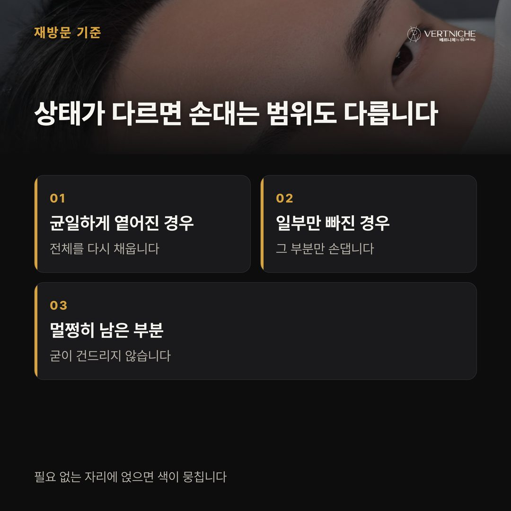
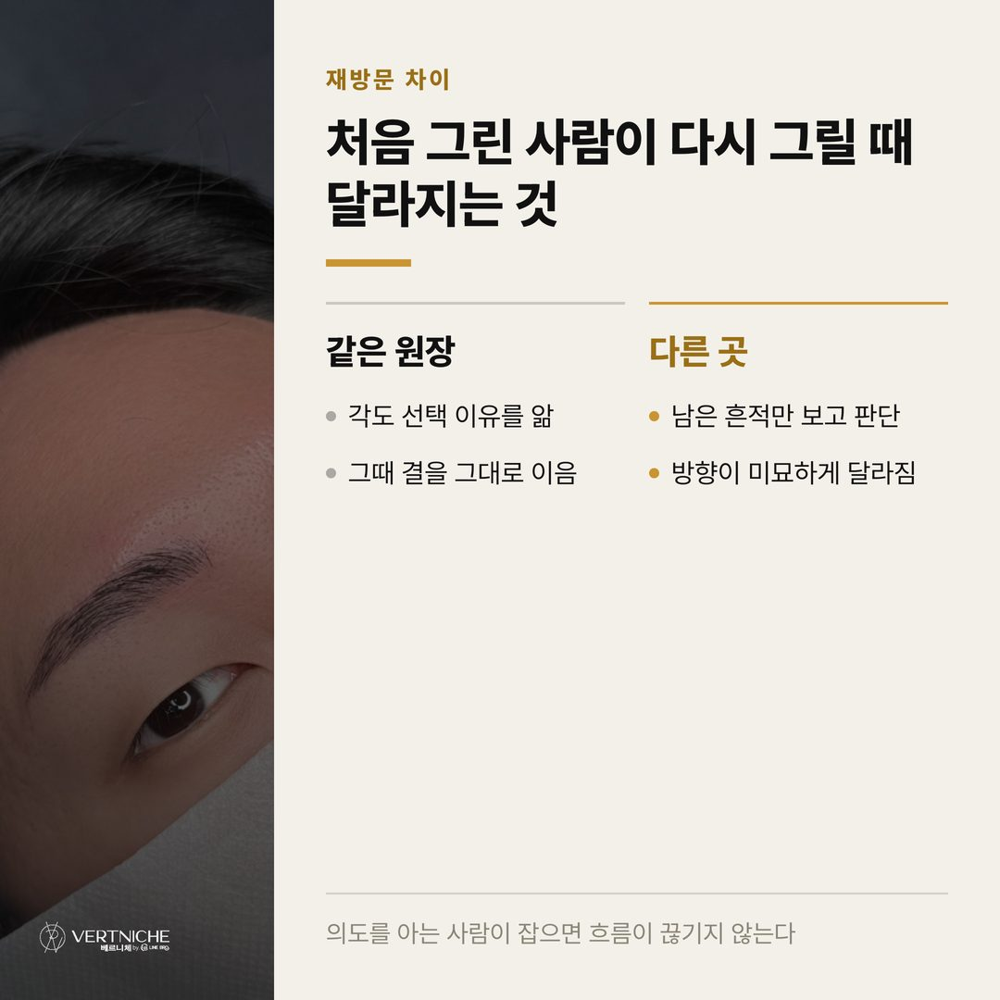
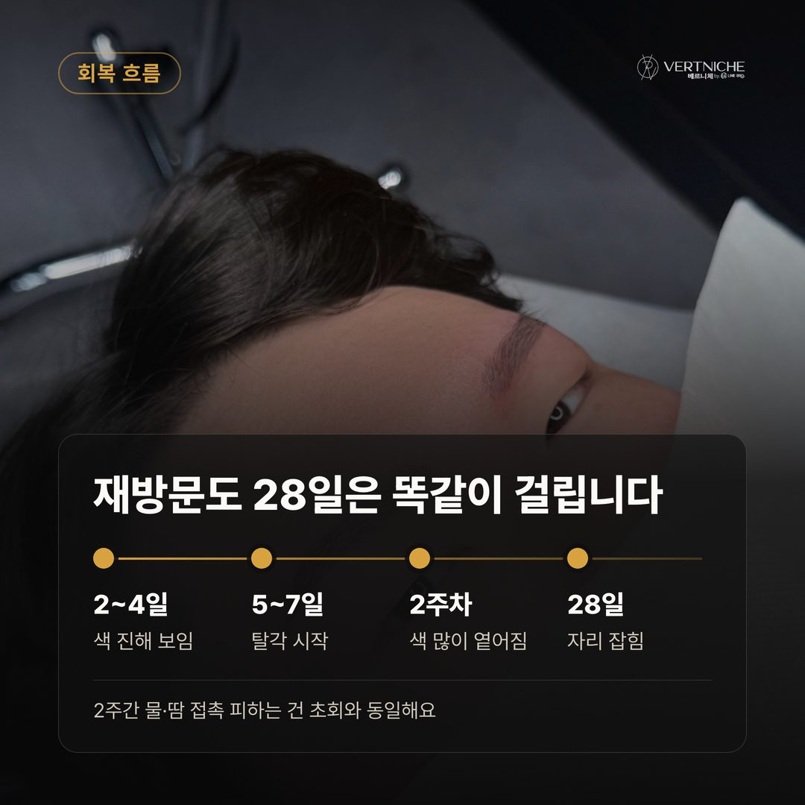
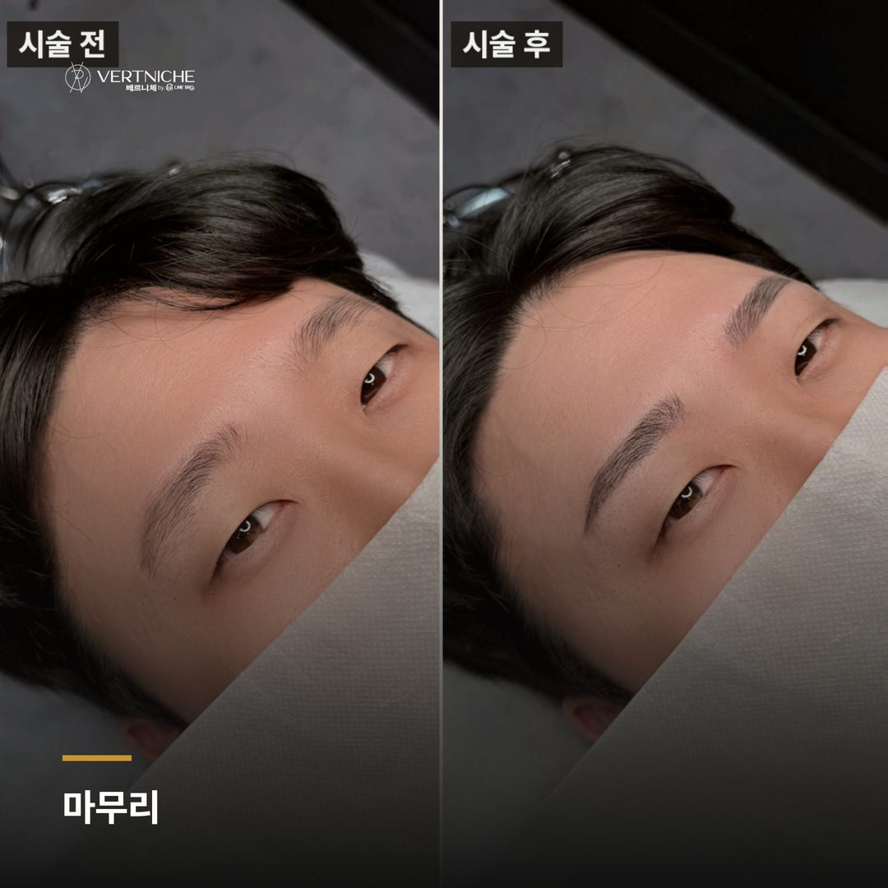
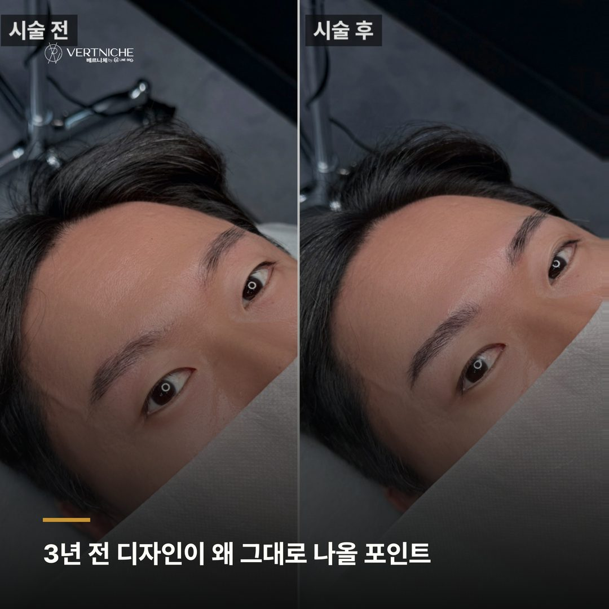
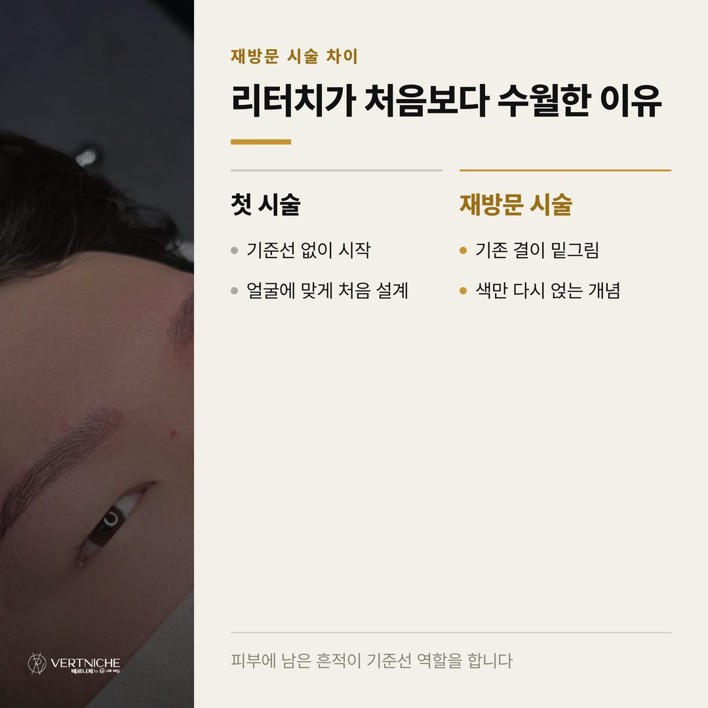
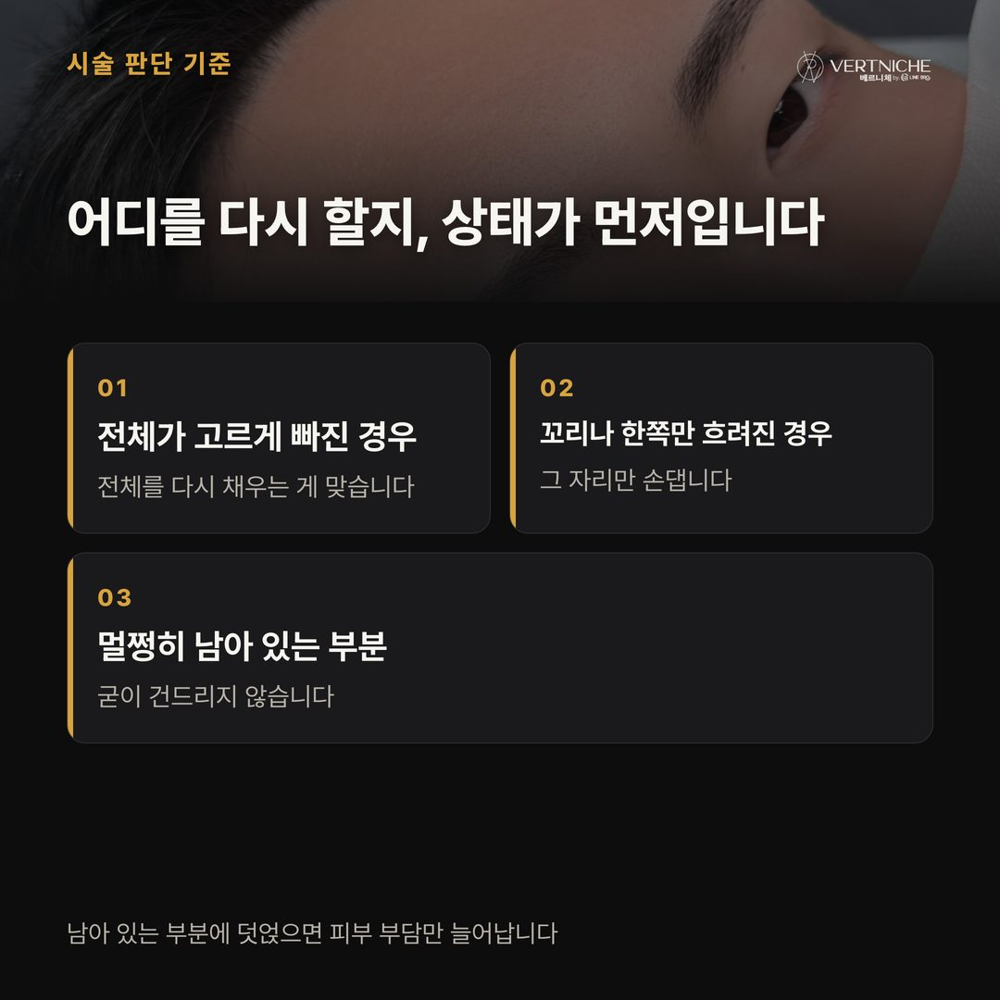

동성로 눈썹문신, 재방문 때 같은 디자인 유지되는 이유

- 처음 시술한 사람에게 다시 오면 3년 전 디자인 기준이 그대로 남아 있어 유리하다
- 색이 빠져도 골격에 맞춰 잡은 디자인은 억지스럽지 않다
- 재방문은 새로 그리는 것이 아니라 남은 것을 살리는 일이다
"저번이랑 똑같이만 해주세요."
재방문 손님한테 이 말을 들을 때마다 저는 속으로 한 번 긴장해요. 처음 시술은 백지에 그리는 거라 오히려 자유로운데, 재방문은 이미 그려진 위에 그때의 결을 기억하면서 다시 얹어야 하거든요. 7년 동안 5,500명 넘게 케어하면서 느끼는 건데, 재방문이 초회보다 더 신경 쓰이는 시술이에요.
얼마 전에 3년 만에 다시 오신 분이 계셨는데, 시술 끝나고 거울 보시더니 "그때 그 눈썹 그대로다"라고 하시더라고요. 그 한마디가 재방문 시술에서 제일 듣고 싶은 말이에요. 왜 같은 디자인이 몇 년 뒤에도 살아날 수 있는지, 그 이야기를 풀어볼게요.
3년 전 디자인이 그대로 나올 수 있었던 이유
베르니체에서는 시술할 때 손님 얼굴 골격에 맞춰 눈썹 시작점, 각도, 꼬리 흐름을 정하고 그 기준을 기록해 둬요. 그때 왜 그렇게 잡았는지가 남아 있으면, 몇 년이 지나도 같은 방향으로 다시 그릴 수 있거든요.
눈썹은 유행 타는 시술이 아니에요. 얼굴 골격은 몇 년 사이에 크게 변하지 않으니까, 처음부터 골격 기준으로 제대로 잡아두면 그 디자인이 3년 뒤에도 여전히 어울려요. 이분도 그랬어요. 3년 전에 얼굴에 맞게 잡아둔 흐름이 지금 얼굴에도 딱 맞았거든요. 유행 모양으로 잡았다면 지금쯤 어색했을 텐데, 골격 기준이었으니까 세월이 지나도 그대로였어요.
색이 빠졌는데 왜 억지스럽지 않았나
재방문 손님들이 자주 오해하는 게 있는데, 색이 다 빠졌으니까 완전히 백지 상태라고 생각하시는 거예요. 실제로는 달라요.
시간이 지나면서 진한 색은 옅어지지만, 피부 속에 은은하게 남은 결이 있어요. 이 흔적이 재방문 시술의 밑그림 역할을 해줘요. 이분 눈썹도 색은 많이 빠졌지만 원래 흐름은 희미하게 남아 있었고, 그 위에 결을 다시 얹으니까 억지로 새로 그린 느낌 없이 자연스럽게 이어졌어요. 처음보다 오히려 부담이 덜하죠. 이미 자리 잡았던 자리를 따라가면서 색만 다시 채워주는 개념에 가까우니까요.
재방문이라고 다 새로 하지는 않아요
이분한테도 말씀드렸는데, 재방문이라고 전체를 싹 다시 하는 게 정답은 아니에요.
색이 균일하게 옅어졌으면 전체를 다시 채우는 게 맞지만, 앞머리는 그대로인데 꼬리만 빠졌거나 한쪽만 흐려진 경우도 꽤 있거든요. 그럴 땐 빠진 부분만 채워주는 게 나아요. 멀쩡히 남은 자리에 굳이 시술을 또 얹으면 피부에 부담만 가고 색도 뭉칠 수 있어요. 저는 이럴 때 필요한 만큼만 손대는 편이에요.
이분은 전체적으로 고르게 옅어진 케이스라 전체를 다시 채웠는데, 부분만 빠졌다면 그 부분만 했을 거예요. "다시 왔으니 전부 새로"가 아니라, 지금 상태에서 뭐가 필요한지를 먼저 보는 거예요.
처음 시술한 사람한테 다시 오는 게 유리한 이유
솔직히 말하면, 재방문일수록 처음 시술한 원장한테 오는 게 결과가 제일 좋아요.
디자인을 잡은 사람이 그때 왜 그렇게 그렸는지 알거든요. 이 각도로 잡은 이유, 꼬리를 여기서 끝낸 이유. 이걸 아는 사람이 다시 잡으면 흐름이 그대로 살아나요. 다른 곳에서 하면 지금 남은 흔적만 보고 새로 판단해야 하니까, 아무리 잘해도 미묘하게 방향이 달라질 수 있어요. 처음의 의도까지는 알 수 없으니까요.
이분이 3년 만에 다시 찾아주신 것도 그 부분을 아셨던 것 같아요. 그때 그 눈썹이 마음에 들었으니, 그 눈썹을 기억하는 사람한테 다시 온 거죠. 사람의 눈썹은 지문과 같아서, 그 결을 기억하는 게 재방문에서는 제일 중요해요.
자주 묻는 것들도 간단히 정리해볼게요.
몇 년 지나서 색이 다 빠졌는데, 재방문 비용은 어떻게 되나요? 초회와 재방문은 눈썹 상태가 달라서 시술 전에 직접 보고 안내드려요. 전체를 다시 채워야 하는지, 부분만 보완하면 되는지에 따라 달라지거든요. 방문하셔서 상담하시면 정확하게 말씀드릴 수 있어요.
다른 곳에서 한 눈썹인데 여기서 재시술 받아도 되나요? 가능해요. 남아 있는 색과 흐름을 보고 그 위에 어떻게 얹을지 판단하는 과정이 필요하긴 해요. 기존 디자인이 얼굴에 잘 맞으면 살리고, 방향이 어색하면 조정하는 쪽으로 상담부터 하는 걸 권해요.
재방문 시술도 회복 기간이 처음이랑 같나요? 네, 28일 기준으로 봐요. 2~4일차에 색이 진해 보이다가 5~7일차에 탈각이 오고, 이후 옅어졌다가 28일쯤 자리를 잡아요. 재방문이라고 회복이 빨라지진 않으니까 시술 후 2주는 물과 땀 조심하셔야 해요.
포스팅 요약
• 재방문에서 같은 디자인이 살아나려면 처음에 골격 기준으로 잡고 그 기록이 남아 있어야 해요
• 색이 빠져도 피부 속 흔적이 밑그림 역할을 하기 때문에, 재방문은 처음부터 새로 그리는 게 아니에요
• 재방문이라고 전체를 다 하지는 않아요. 지금 상태에서 필요한 만큼만 손대는 게 맞아요
궁금한 점은 아래 채널로 편하게 문의 주세요. 시술 사례는 인스타그램에서 계속 올리고 있어요.
더 보기 / 상담
남자관리 사례랑 눈썹문신 결과는 인스타에 계속 올리고 있어요. 시술 사진이랑 관리 팁은 아래 링크에서 더 보실 수 있습니다.
시술 사진









이 글은 네이버 블로그에도 같은 내용으로 올라가 있습니다.